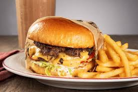
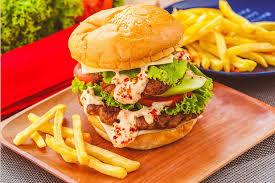

Burger Plaza

At Burger Plaza, flavor takes center stage. We are a modern burger destination dedicated to serving hot, satisfying meals made with carefully selected ingredients and bold, unforgettable tastes. From the first sound of patties searing on the grill to the final drizzle of our signature sauces, every detail is prepared with care to deliver a crave-worthy experience.
Our menu showcases handcrafted burgers built with perfectly seasoned beef, tender chicken fillets, and savory meat-free alternatives. Each creation is stacked with farm-fresh produce, melted cheeses, and specialty sauces blended in-house to create rich, layered flavors. Whether you enjoy a simple, well-balanced burger or a towering masterpiece packed with premium toppings, every order is prepared fresh and served just the way you like it.
To complete the meal, Burger Plaza offers crisp, golden fries, loaded sides bursting with flavor, and smooth, thick milkshakes in classic and creative varieties. Every item is designed to complement our burgers while satisfying every appetite.
The atmosphere at Burger Plaza is lively and welcoming, making it the perfect stop for a quick bite, a relaxed meal, or a get-together with friends and family. With efficient service and a commitment to excellence, we ensure that quality and convenience always go hand in hand.
Whether you are stopping by during a busy day or enjoying a laid-back evening out, Burger Plaza delivers bold taste, generous portions, and a dining experience worth repeating.
Burger Plaza — Where big flavor meets big satisfaction.
Find a Location Near You
- Sunrise Avenue No. 18
Central City District - Maple Street No. 42
Riverside Plaza - Maple Street No. 42
Riverside Plaza - Harmony Road No. 25
Lakeside Area - Silverline Street No. 10
Downtown Square - Aurora Street No. 33
Midtown Commons
Popular Menus
The Plaza Supreme

Our best-selling signature burger, built for serious flavor lovers. The Plaza Supreme features a thick, flame-grilled beef patty layered with melted aged cheddar, crispy smoked beef strips, fresh lettuce, ripe tomato slices, and crunchy pickles. It’s finished with our rich Plaza Signature Sauce and served on a perfectly toasted brioche bun.
The Inferno Stack

For those who love a little heat, The Inferno Stack delivers the perfect kick. This crowd favorite includes a juicy double beef patty, spicy pepper jack cheese, jalapeño slices, crispy onions, and a smoky chipotle blaze sauce. Served on a soft toasted bun, it balances spice, crunch, and savory goodness in every bite.